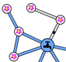
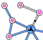

Water the flowers
Beaver installed pipes to water his flowers with water coming from the faucet.
Your goal is that all the flowers continue to get water even if one of the pipes gets stuck.
To do this, add pipes.
Click on two flowers to connect them with a pipe. Click on an added pipe to remove it.
|
You can move the flowers to help you. |
 
